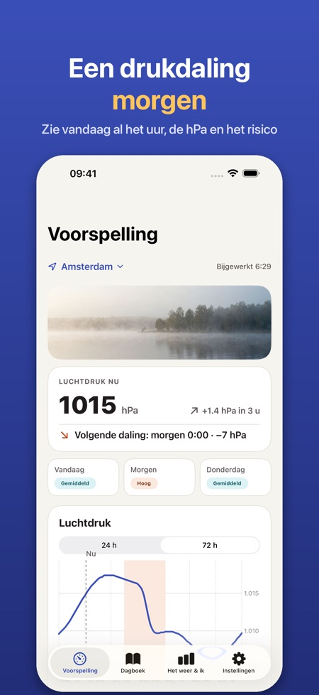
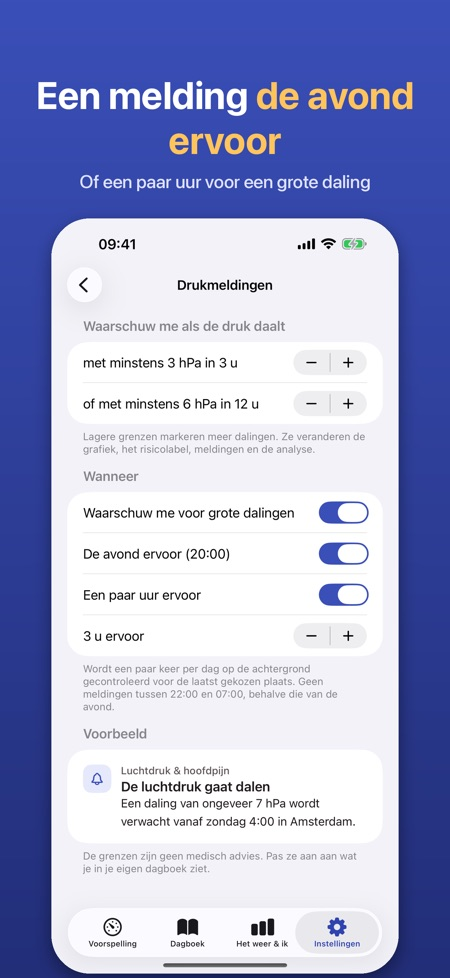
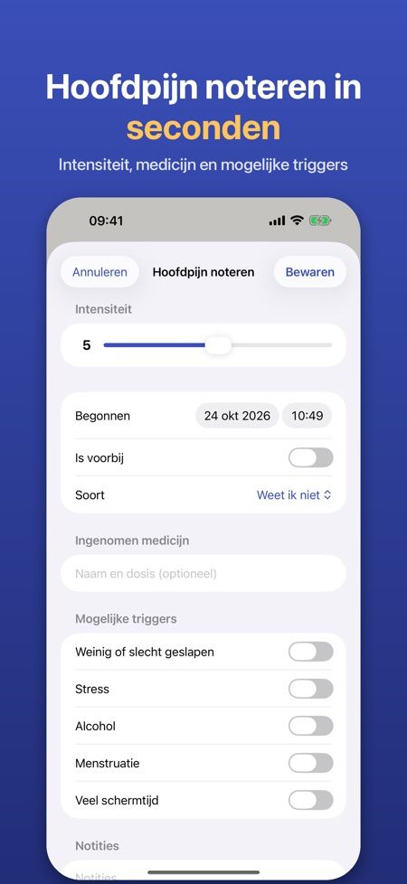

Drukvoorspelling en dagboek. Herfststormen brengen snelle drukdalingen. Zie ze per uur aankomen, krijg de avond ervoor een melding en noteer hoofdpijn met één tik.



Veel mensen merken hoofdpijn of migraine als de luchtdruk snel daalt. De app toont de luchtdruk per uur, markeert de grote dalingen en helpt je te zien of het weer samenhangt met je hoofdpijn.
LUCHTDRUK PER UUR
• Grafiek van de luchtdruk voor de komende 24 uur (72 uur met Pro) voor je locatie of een stad naar keuze
• Dalingszones worden gemarkeerd: minstens 3 hPa in 3 uur of 6 hPa in 12 uur – de grenzen zijn aan te passen
• Een eenvoudig risicolabel per dag (laag, gemiddeld, hoog) dat alleen op de drukverandering is gebaseerd en in de app wordt uitgelegd
• Ook luchtvochtigheid en temperatuurverandering
VOORAF EEN MELDING (PRO)
• Melding de avond ervoor of een paar uur voor een grote drukdaling
• De app controleert de voorspelling op de achtergrond voor de laatst gekozen plaats
HOOFDPIJNDAGBOEK
• Noteer met één tik, ook direct vanuit een melding: intensiteit 0–10, begin en einde, soort, medicijn en of het hielp, notities
• Mogelijke triggers: slaap, stress, alcohol, menstruatie, schermtijd
• Maandkalender met dagen met drukdaling, details per notitie met de druk rond het begin en een overzicht van de triggers die je noteerde
HEEFT HET WEER INVLOED OP MIJ? (PRO)
• Na 30 dagen dagboek worden je hoofdpijndagen vergeleken met de drukdaling van die dag: eenvoudige cijfers en grafieken, geen medische conclusie
• Artsrapport: een pdf voor de laatste 30 of 90 dagen of een eigen periode
WIDGET (PRO)
• De luchtdruk nu, de trend en de volgende grote daling op je beginscherm of toegangsscherm
PRO
Jaarabonnement of één eenmalige aankoop voor altijd. Zonder Pro houd je de grafiek voor 24 uur en het dagboek. Geen account en geen advertenties.
PRIVACY
Je dagboek blijft op je iPhone. Alleen anonieme gebruiksstatistieken, die je kunt uitzetten. Weergegevens komen van Apple Weer.
De app is geen medisch hulpmiddel en geeft geen medisch advies of diagnoses. Verandert je hoofdpijn of is die ernstig, neem dan contact op met een arts.